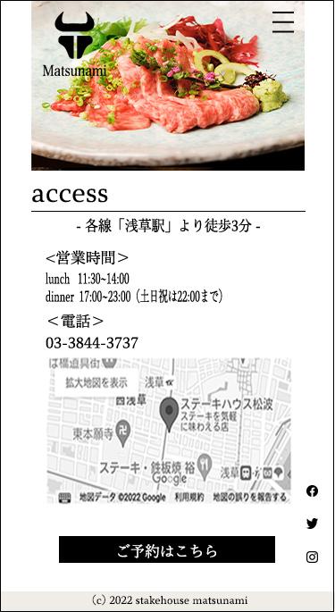

about
協調性
- 前職で様々なチームや立場で事業を遂行
ものづくり
- 前職でHP文案やチラシを作成
- 人のために物を作る事が好き
積極性
- 新しい事にも積極的に取り組む
- 現在webマーケティングを勉強
concept
" 想い "を届け繋がり､広がる
知ってほしい、見てほしい、使ってほしい...デザインの裏にはたくさんの"想い"があります。
その"想い"を届け、人と人が繋がり、輪が広がる。そのことを大切にデザインをしています。
works

|
 | ||
|---|---|---|---|
|
ク ラ イ ア ン ト |
ステーキハウス浅草松波
※クラウドワークスに掲載されていた案件を題材に作成 |
||
|
要 望 |
ホームページをリニューアルし、予約を増やしたい | ||
|
ポ イ ン ト ／ 概 要 |
料理をアピール ペルソナの飲食店選びの条件である｢料理の質の高さ｣のアピールに重点を置いたページ |
雰囲気をアピール ペルソナの飲食店選びの条件である｢店の雰囲気が落ち着いている｣ことのアピールに重点を置いたページ |
シンプルですぐ予約できる トップが予約に必要な情報のみの１画面で完結する、忙しいペルソナもすぐに予約ができるページ |
view more
|
ペ ル ソ ナ |
佐藤 誠
|
||
|---|---|---|---|
|
ペ ル ソ ナ を 導 く 流 れ |
|
||
|
流 入 フ ロ ｜ |
グルメサイトで見つける ↓ 詳細の確認のためHPへ ↓ ｢こだわり｣や｢お品書き｣の写真で料理の質の高さを知る ↓ ｢お品書き｣で料理の詳細を確認 ↓ 予約ボタンから予約 |
グルメサイトで見つける ↓ 詳細の確認のためHPへ ↓ トップの写真や｢about｣から老舗の落ち着いた雰囲気を感じる ↓ ｢お品書き｣で料理の詳細を確認 ↓ 予約ボタンから予約 |
グルメサイトでメニューや雰囲気を見る ↓ 予約のためHPへ ↓ 予約ボタンから予約 |
|
コ ン テ ン ツ ア イ デ ィ ア |
|
|
|
|
デ ザ イ ン ア イ デ ィ ア |
|
|
|
close